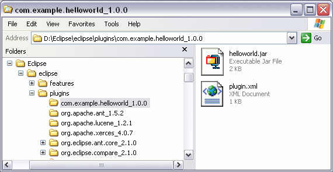

| Eclipse Corner Article |

Summary
The Plug-in Development Environment (PDE) provides a set of tools that assist the developer in every stage of plug-in development from genesis to deployment. This article chronicles the creation, development, testing, building, and deployment of a simple "Hello World" plug-in using a subset of these tools.By Wassim Melhem and Dejan Glozic, IBM Canada Ltd.
September 8, 2003
A plug-in is the fundamental building block of the Eclipse platform. Eclipse is the sum of its constituent plug-ins, where each plug-in contributes functionality to the platform and is activated when the functionality it provides is needed. Structurally, each plug-in resides in a subdirectory called eclipse/plugins in the Eclipse installation, and contains a manifest (plugin.xml) file that describes its content to the Eclipse runtime. A plug-in may also include a Java™ code library and other resource files it needs, such as icons, properties files, etc.
Writing an Eclipse plug-in is straight forward, but not exactly trivial. The task entails creating a manifest file, writing Java source code, compiling the code into a library, testing it and packaging the plug-in into a form that is suitable for deployment. This task can be quite intricate, depending on the complexity of the plug-in and the developer's Eclipse expertise. Enter PDE.
The Plug-in Development Environment (PDE) is a set of tools designed to assist the Eclipse developer in developing, testing, debugging, building, and deploying Eclipse plug-ins while working inside the Eclipse workbench. Keeping with Eclipse's philosophy of seamless integration of components, PDE is not a separately launched tool. PDE integrates itself in the workbench by providing platform contributions, such as editors, wizards, views and a launcher, which users can easily access from any perspective without interrupting their work flow.
This article showcases a subset of PDE tools that are available in Eclipse 2.1 by chronicling the journey of one plug-in from genesis to deployment. The plug-in will contribute to the Eclipse workbench a menu containing a single item which, when selected, will pop up a dialog containing the phrase "Hello, world!"
In order for PDE to provide a development environment that is identical to the runtime environment in which the plug-in will be later deployed, one needs to specify the Target Platform. Target platform refers to the set of plug-ins with which the plug-in being developed will be deployed. At runtime, most plug-ins require other plug-ins to be on their class path in order to run properly. At development time, a plug-in, which is represented as a project in the workspace, similarly requires that all the libraries for its required plug-ins be on its build path in order for its code to compile without errors.
Libraries for required plug-ins can be easily made available to the workspace plug-in by simply specifying the installation location of the target platform. PDE scans and lists all the plug-ins found at that location, but only the plug-ins explicitly selected by the user will constitute the target platform and can be used by plug-ins in the workspace; the rest are ignored.
 Plug-ins from the target
platform are
not part of the workspace, and their contents therefore cannot be browsed in Eclipse's Navigator
and Package
Explorer views. PDE thus provides a Plug-ins
view where the directory structure of these external plug-ins can be browsed and
external files can be opened (in read-only mode, of course).
Plug-ins from the target
platform are
not part of the workspace, and their contents therefore cannot be browsed in Eclipse's Navigator
and Package
Explorer views. PDE thus provides a Plug-ins
view where the directory structure of these external plug-ins can be browsed and
external files can be opened (in read-only mode, of course).
In the workspace, a plug-in is encapsulated in a single project. At its top level, the project must contain a manifest file, describing the plug-in content, and a build.properties file, containing information that is used to guide the build process. To create a plug-in project, PDE provides a New Plug-in Project wizard, which can be found under the Plug-in Development category in the New Project creation wizard. This wizard not only creates the plug-in project, it also gives the developer a quick start by generating the two essential plug-in files and, optionally, some Java code.
Most plug-ins, including the "Hello World" plug-in, are meant to contain executable Java code and must therefore be housed in a Java project. In such cases, one can specify the source folder that will contain the plug-in code during development, and the library where the compiled code will be packaged. PDE maps the library name to the source folder and saves that information in the plug-in project's build.properties file, so that it can be used later during the build process. One can also specify the output folder, where the Java compiler will place the compiled *.class files of the project. When launching a runtime workbench instance to run or debug the plug-in, PDE will put this output folder on the plug-in runtime classpath, thus allowing the runtime class loader to locate and load the freshly generated class files.
 Not all plug-ins contain Java code.
Plug-ins such as documentation plug-ins contain only non-Java resources, and
can therefore be sufficiently contained in simple projects. In fact, it is
desirable to create simple projects for such plug-ins, so that they would not
unnecessarily be subjected to Java builders.
Not all plug-ins contain Java code.
Plug-ins such as documentation plug-ins contain only non-Java resources, and
can therefore be sufficiently contained in simple projects. In fact, it is
desirable to create simple projects for such plug-ins, so that they would not
unnecessarily be subjected to Java builders.
The ability to create a plug-in with a ready-to-run extension is appealing, particularly to novice Eclipse developers. Therefore, templates for Eclipse's more popular extensions are available during the plug-in project creation process. Writing an Eclipse extension always involves adding markup to the manifest file, and if required, accompanying Java code that gets executed upon the invocation of the extension. The code generation wizards generate all the markup and code needed to produce a customizable and fully-functioning extension.
Selecting the "Hello, World" template wizard from the list above results in the creation of a "Hello World" plug-in that is ready to run. That is great, but would make this paper extremely short. In this example, we will create a blank plug-in project, so that we can demonstrate how to write a plug-in from scratch.
As a result of our selections, the wizard generates the plug-in project, the manifest file, the build.properties file and initializes the content of these two files based on the data entered in the wizard. Let us now proceed with the implementation of the plug-in, starting with the editing of the manifest file.
The manifest file describes the content of the plug-in to the Eclipse runtime. In addition to basic plug-in information such as plug-in identifier, version, etc., this file contains four main sections:
Let us now edit the different sections of the plug-in manifest file using the PDE multi-page UI editor, the default editor for manifest files in Eclipse.
Contributing a menu to the workbench requires extending the actionSets extension point that is defined by the org.eclipse.ui plug-in. Therefore, the "Hello World" plug-in must declare this plug-in as a dependency. By doing so, in addition to providing access to the extension point, the libraries of org.eclipse.ui will be on the plug-in's runtime classpath.

The list of required plug-ins solely determines the libraries that will be on the plug-in's runtime classpath. PDE takes charge of the vital task of computing the plug-in project's classpath during development time, so that it accurately reflects the runtime classpath. Upon saving the manifest file, PDE automatically updates the project's classpath to reflect changes made to the dependency list, if any. This feature is an invaluable utility because the alternative, i.e., computing the classpath manually, is tedious and error-prone.
The list of required plug-ins should not contain unused entries. An incomplete list of dependencies is easy to spot at development time because the plug-in's code will not compile in the workspace. Extraneous entries, on the other hand, are harder to spot because they are benign at development time, but can slow down class loading at runtime as extra libraries on the plug-in's runtime classpath will unnecessarily be searched. PDE, therefore, provides a Find Unused Dependencies utility as an item in the required plug-ins list's context menu, which scans the dependency list for extraneous entries and offers to remove them.
 The plug-ins
org.eclipse.core.boot and org.eclipse.core.runtime are implicitly
available for all plug-ins at runtime, and therefore need not be explicitly
listed as required plug-ins.
The plug-ins
org.eclipse.core.boot and org.eclipse.core.runtime are implicitly
available for all plug-ins at runtime, and therefore need not be explicitly
listed as required plug-ins.
A plug-in can contribute new functionality to the platform by adding an extension to extension points declared by other plug-ins. The extension declaration must follow the schema defined by the extension point it contributes to. The schema can be as simple or as complex as the author of the extension point defines it to be.
Adding a new extension on the Extensions page of the manifest editor involves creating nested elements using the context menu, and setting attribute values for these elements in the Properties view. When adding a new extension, PDE uses the grammar of the extension point to fill the context menu with valid element names and populate the property view with the legal attributes for the selected element.
Menus and menu items, which, along with toolbar actions, are collectively referred to as action sets, can be added to the workbench by contributing to the org.eclipse.ui.actionSets extension point. The top-level element of this extension is an 'actionSet' element specifying its unique internal identifier, as well as its label and visibility in the workbench. When the attribute 'visible' is set to 'true', the action set will be visible in all perspectives; otherwise, the action set will have to be manually added to a perspective by choosing Window > Customize Perspective... > Other.
The 'menu' element specifies the label of the menu as it will appear in the workbench and the internal identifier of the menu.
The 'separator' element creates a menu separator that also serves as a group to which the menu item will be added.
The 'action' element specifies the actual menu item. Using the menu's identifier and the separator's name, the 'menubarPath' attribute indicates the slot where the item is to be placed. When the menu action is selected, the class that will be executed to display the "Hello, world!" message is the one specified by the 'class' attribute. The schema indicates that this class must implement the interface org.eclipse.ui.IWorkbenchWindowActionDelegate; PDE therefore customizes the value field for the 'class' property to allow one to specify and generates on the spot a Java class that implements the specified interface.
PDE generates the class, complete with the stubs for all the required methods. The init(..) and run(..) method need to be manually fleshed out as below:
During the plug-in project creation process, we had specified that the code is to be packaged in a library named 'helloworld.jar'. The library's type, visibility, and content can be set on the Runtime page of the manifest editor.
A library's type plays an important role at runtime. If a library is declared to contain both code and resources, accessing a resource or a class file from such a library results in the activation of the plug-in. On the other hand, accessing a resource from a library that is declared to contain only resources, e.g., libraries that only contain NL-*.properties files, does not activate the plug-in.
In order to speed up class loading, one should always declare the package prefixes that are found in each library. A library will not be searched during class loading unless its list of package prefixes contains a prefix for the fully qualified name of the class being searched for. Libraries that do not declare a list of package prefixes will be searched during the loading of every class.
During development, the library JAR has not been created yet. The Library Content section lists the source folders that will be compiled into the selected library during the build process. Whenever the user modifies this list, PDE automatically updates the appropriate entries in the plug-in project's build.properties file.
Defining a new extension point requires the writing of a schema, which all clients of the extension point must then follow in order to be processed correctly at runtime. PDE provides an editor for the composition of such a schema. However, since the "Hello World" plug-in does not contribute new extension points, we will leave the discussion of extension points and schemas for a future article.
PDE contributes to the platform a launcher that allows one to test and debug plug-ins. One can create and run a runtime workbench launch configuration to spawn a second (runtime) workbench instance, whose constituent plug-ins are the workspace plug-ins and all selected external plug-ins in the target platform. The runtime workbench instance thus previews the behavior of the plug-ins in the environment in which they will later be deployed.
The runtime workbench instance is launched in development mode (i.e., with the -dev option), so the output folder of the plug-in project is put on the runtime classpath of the corresponding plug-in. This allows the runtime class loader to always locate and load the plug-in's freshest class files. All other execution options and settings with which to launch the runtime workbench are set in the launch configuration itself. These settings include the JRE, VM arguments, and all the program execution options supported by the Eclipse platform. The workspace location for the runtime workbench is also specified in the configuration, and must be different from the workspace location of the host platform as one definitely needs to test their plug-in in a sandbox. One may create multiple configurations to test their plug-ins under different conditions.
 PDE uses the values specified
on the Plug-in Development > Target Environment preference page to
set the default values for the -os, -ws, -arch and -nl
arguments in the configuration. Changes made to these values in the configuration
are local to that configuration. Changes made to values on the preference page
affect the defaults for all configurations that are created thereafter.
PDE uses the values specified
on the Plug-in Development > Target Environment preference page to
set the default values for the -os, -ws, -arch and -nl
arguments in the configuration. Changes made to these values in the configuration
are local to that configuration. Changes made to values on the preference page
affect the defaults for all configurations that are created thereafter.
When the launch configuration in our example is run, the runtime workbench will appear within seconds. The "Hello World Menu" menu will appear at the top, containing one item "Hello World Action". When this item is selected, a dialog pops us to greet the world.
The last stage in the life cycle of a workspace plug-in is its packaging in a format that will make it easily deployable in any Eclipse-based product.
The process of packaging a plug-in project is driven by the build.properties configuration file. This file is structured as a set of key-value pairs, where the keys are defined by Eclipse's build process, and provides information about the mapping of source folder to jars, what files to include in the packaged plug-in, what files to exclude, etc.
Two of these keys are used in the building of the "Hello World" plug-in:
To package and export the plug-in, the Deployable Plug-ins and Fragments export wizard is used.
The zip file generated then simply needs to be unzipped into the installation directory of any Eclipse-based product and the plug-in becomes part of that product.

Using a simple "Hello World" plug-in as an example, this article demonstrates how PDE provides all the tools necessary to develop an Eclipse plug-in more easily and more quickly. The plug-in project creation wizard gives a quick start by generating the project along with the plugin.xml and build.properties files. The code generation wizards generate code and markup for Eclipse's more popular extension points, so that a novice Eclipse developer can get their first plug-in up and running in a few minutes. The manifest editor generates a syntactically and semantically valid manifest file. The runtime workbench launcher allows the testing and debugging of the plug-in in an environment that is identical to the runtime environment in which it will be deployed. Finally, the plug-in export wizard turns the tedious build and packaging process into a simple one-step operation.
While plug-ins seem to take center stage in the Eclipse architecture, other components such as fragments, features and update sites play an important role in the development of Eclipse products. In future articles we will discuss the PDE tools available for the development of these components, as well as take a detailed look at how to define new extension points.
IBM is a registered trademark of International Business Machines Corporation in the United States, other countries, or both.
Java and all Java-based trademarks and logos are trademarks or registered trademarks of Sun Microsystems, Inc. in the United States, other countries, or both.